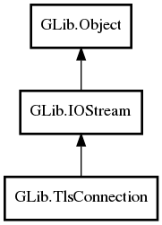

- TlsConnection
- base_io_stream
- certificate
- database
- interaction
- peer_certificate
- peer_certificate_errors
- rehandshake_mode
- require_close_notify
- use_system_certdb
- TlsConnection
- emit_accept_certificate
- get_certificate
- get_database
- get_interaction
- get_peer_certificate
- get_peer_certificate_errors
- get_rehandshake_mode
- get_require_close_notify
- get_use_system_certdb
- handshake
- handshake_async
- set_certificate
- set_database
- set_interaction
- set_rehandshake_mode
- set_require_close_notify
- set_use_system_certdb
- accept_certificate
TlsConnection
Object Hierarchy:
Description:
Required by:

Namespace: GLib
Package: gio-2.0
Content:
Properties:
- public IOStream base_io_stream { construct set; owned get; }
- public TlsCertificate certificate { set; get; }
- public TlsDatabase database { set; get; }
- public TlsInteraction interaction { set; get; }
- public TlsCertificate peer_certificate { get; }
- public TlsCertificateFlags peer_certificate_errors { get; }
- public TlsRehandshakeMode rehandshake_mode { construct set; get; }
- public bool require_close_notify { construct set; get; }
- public bool use_system_certdb { construct set; get; }
Creation methods:
- protected TlsConnection ()
Methods:
- public bool emit_accept_certificate (TlsCertificate peer_cert, TlsCertificateFlags errors)
- public weak TlsCertificate get_certificate ()
- public weak TlsDatabase get_database ()
- public weak TlsInteraction get_interaction ()
- public weak TlsCertificate get_peer_certificate ()
- public TlsCertificateFlags get_peer_certificate_errors ()
- public TlsRehandshakeMode get_rehandshake_mode ()
- public bool get_require_close_notify ()
- public bool get_use_system_certdb ()
- public virtual bool handshake (Cancellable? cancellable = null) throws Error
- public virtual async bool handshake_async (int io_priority = DEFAULT, Cancellable? cancellable = null) throws Error
- public void set_certificate (TlsCertificate certificate)
- public void set_database (TlsDatabase database)
- public void set_interaction (TlsInteraction? interaction)
- public void set_rehandshake_mode (TlsRehandshakeMode mode)
- public void set_require_close_notify (bool require_close_notify)
- public void set_use_system_certdb (bool use_system_certdb)
Signals:
- public virtual signal bool accept_certificate (TlsCertificate peer_cert, TlsCertificateFlags errors)